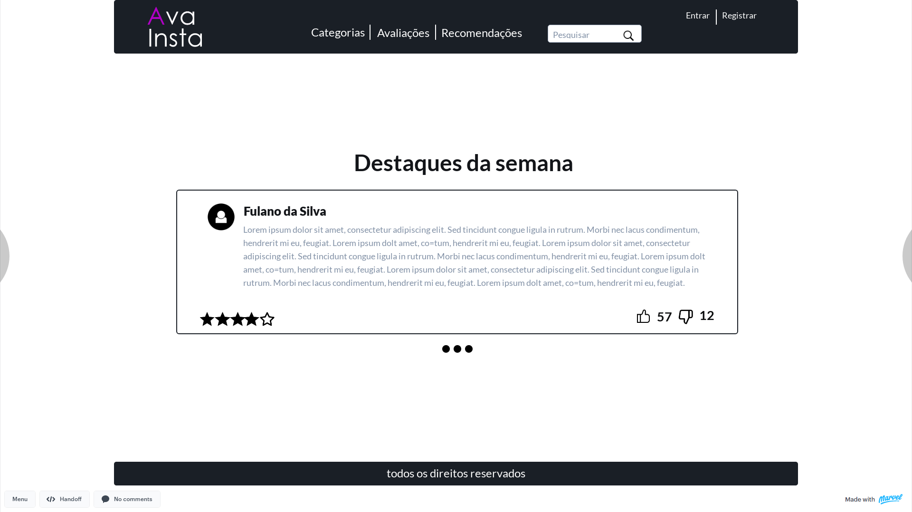
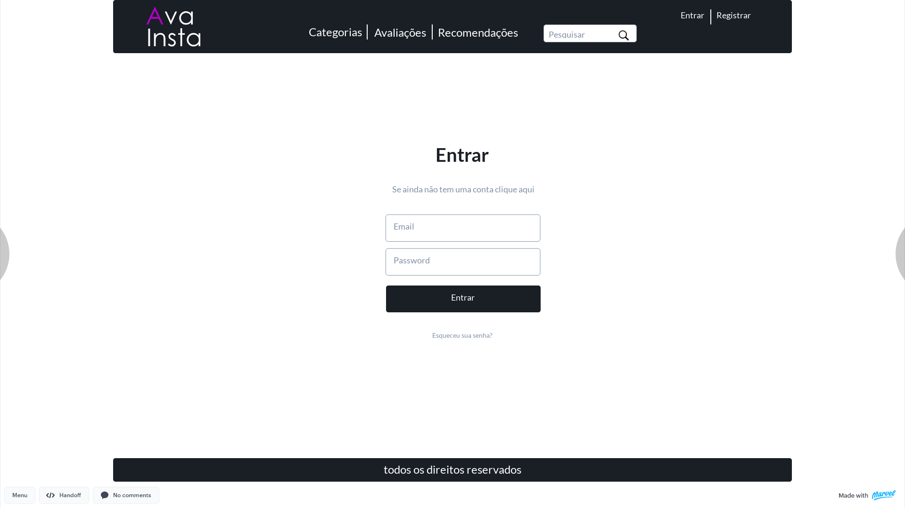
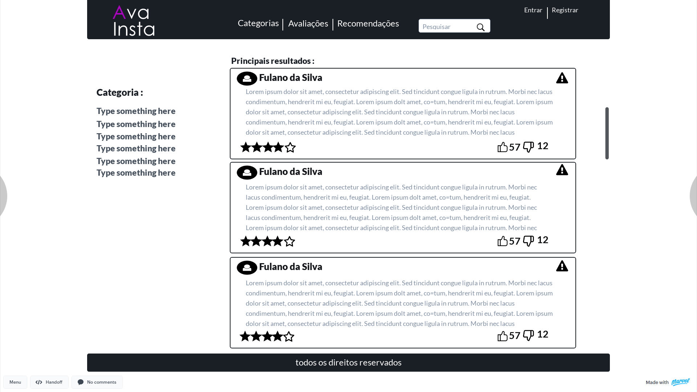
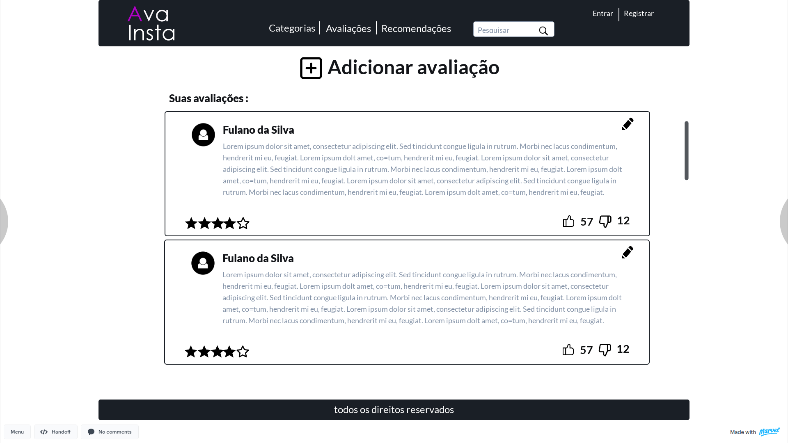
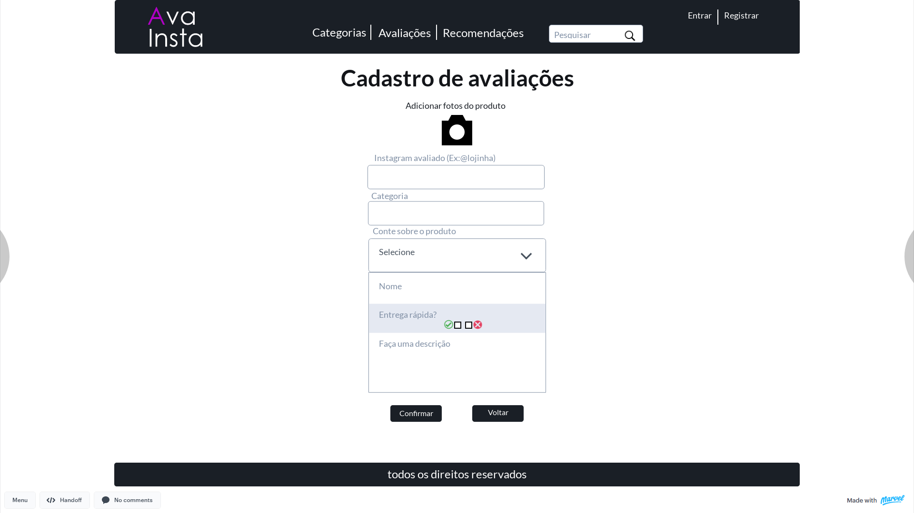
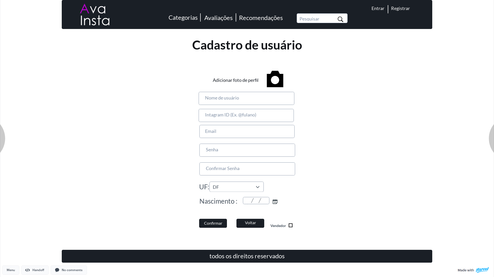
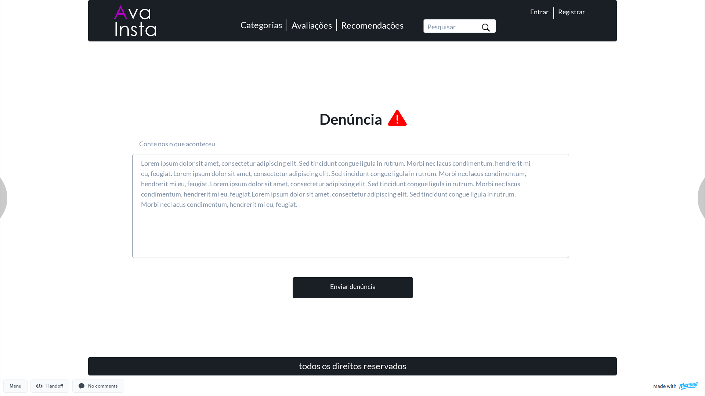

Documento de Identidade Visual
Histórico de Revisão
| Data | Versão | Modificação | Autor |
|---|---|---|---|
| 31/03/2021 | 0.1 | Criação do documento | Luíz Gustavo |
| 01/04/2021 | 0.2 | Atualização do documento e inserção dos tópicos 4 e 5 | Luíz Gustavo, Victor |
| 01/04/2021 | 0.3 | Arrumando erros de identação | Felipe, Luiz, Deivid, Victor |
1.Introdução
O documento de identidade visual tem o intuito de listar os componentes visíveis na aplicação AvaInsta, contendo nele tipografia, paleta de cores, logotipo e protótipo de alta fidelidade.
2. Paleta de Cores
2.1 Composição do corpo do site
A paleta de cores escolhida para o site apresenta uma variação de tonalidades predominantemente azul chamada Muted Neon.
2.1.1 Código hexadecimal das cores
- girlsonthefloor: #35173B
- Atlanta Surprise 4: #341D47
- jet: #578DAA
- muted neon teal: #52D3A2
- FFBD7F: #FFBD7F
2.2 Composição de cores da tipografia
2.2.1 Textos
- Títulos: #131519.
- Textos: #8190A5.
- Menus: #FFFFFF.
2.2.2 Logotipo
- Primeira letra: #9505bf.
- Resto da composição: #FFFFFF.
3. Logotipo
Foi escolhida para a logotipo uma composição básica de elementos, sendo apenas a palavra AvaInsta na fonte century gotic quebrada ao meio, com uma fonte de traços simples e não serifada, tendo como destaque a primeira letra em uma cor diferente.
4. Tipografia
4.1 Títulos
| Fonte | Tamanho | Espaçamento das linhas | Espaçamento das letras |
|---|---|---|---|
| Lato | 48px | 62px | 0px |
| Lato | 23px | auto | 0px |
| Lato | 26px | auto | 0px |
4.2 Textos
| Fonte | Tamanho | Espaçamento das linhas | Espaçamento das letras |
|---|---|---|---|
| Lato | 18px | 28px | 0px |
4.3 Menus
| Fonte | Tamanho | Espaçamento das linhas | Espaçamento das letras |
|---|---|---|---|
| Lato | 24px | 62px | 0px |
5. Protótipo de alta fidelidade
Para Acessar o protótipo interativo basat clicar aqui.
5.1 Página principal

5.2 Página de login

5.3 Página de recomendações

5.4 Página de avaliações

5.5 Página de cadastro de avaliações

5.6 Página de Cadastro de usuário

5.7 Página de denúncias
